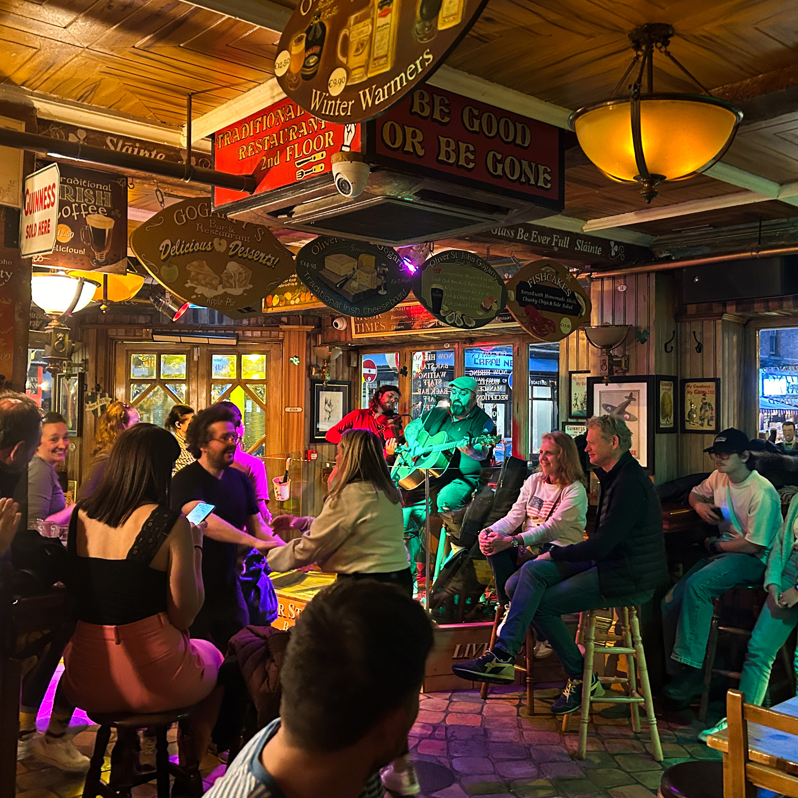
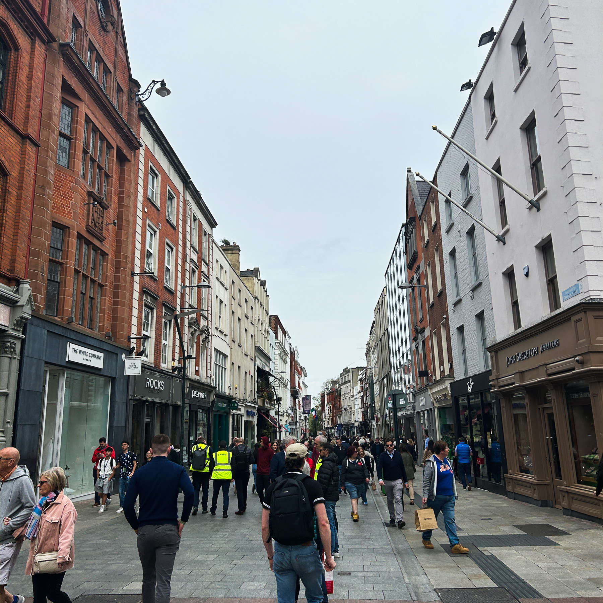
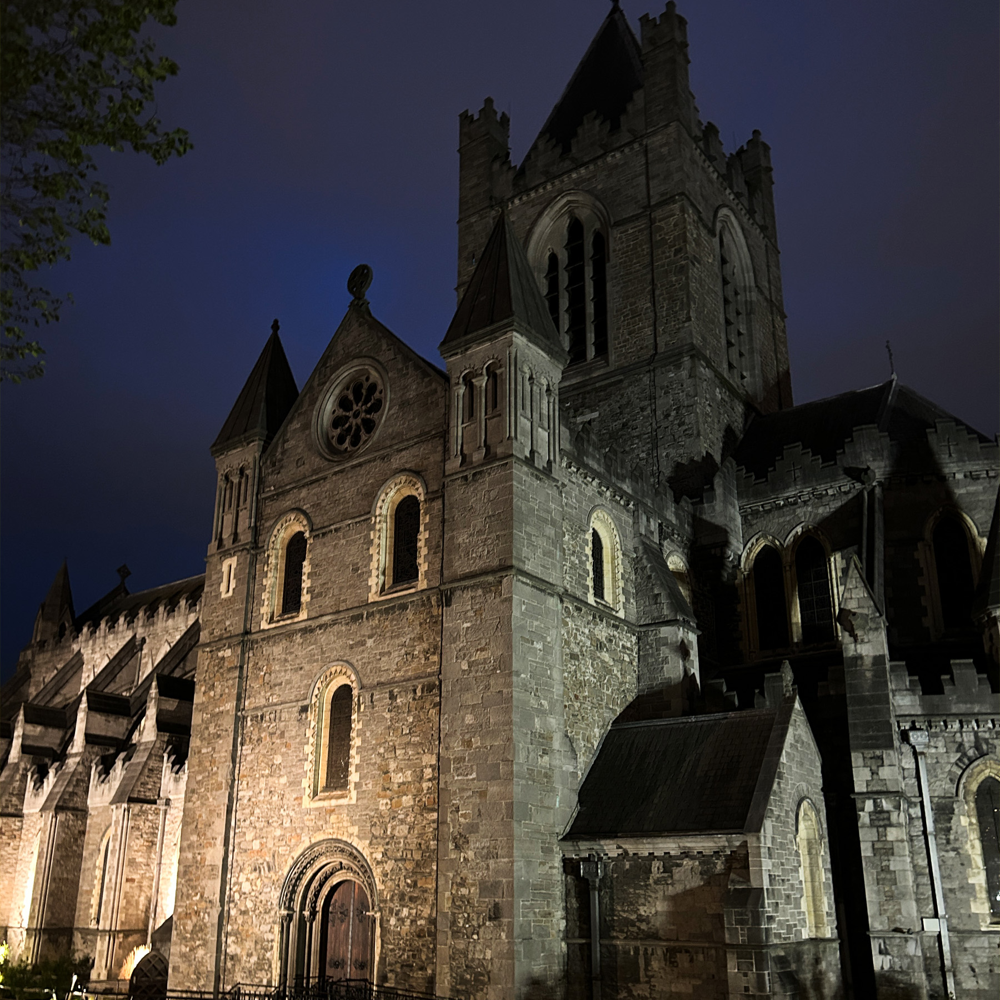
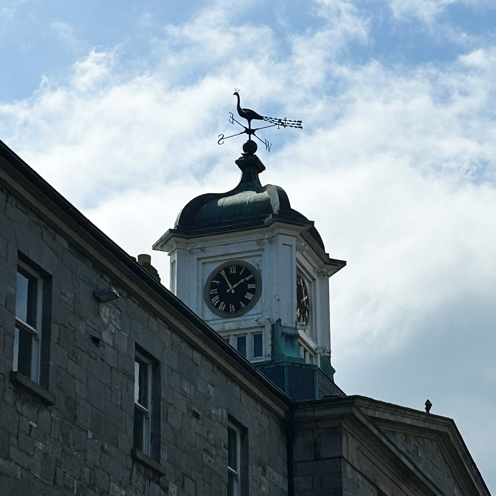

About Me

Welcome to our digital travel log documenting our study abroad adventure in Ireland! Our journey takes us through the bustling streets of Dublin, the historic town of Kilkenny, the vibrant city of Galway, and the breathtaking Cliffs of Moher. Join us as we explore the rich culture, stunning landscapes, and warm hospitality of the Emerald Isle. ☘
Gallery

National History Musuem

Cliffs of Moher

Fumbally Cafe Table

Fumbally Cafe Photo Wall

Gotartys Pub

Bus Tour

Vice Coffee

Henry Street

Spice Bag

Gafton Street

Christ Church

Griffith Spire
The Ramen Bar

St. Paricks Park